Overview Tab (Breakers)
The Overview tab displays the summary of different data point values measured by the devices. It contains the following tiles:
- Summary: Displays breaker information and commands, messages with trip log and event log, condition monitoring, real-time values for Active Power, Reactive Power, Apparent Power, Current, and Energy. DAS+ shows the status of DAS+ function (Active or Inactive). When DAS + is active, the blue square box is displayed with the Active text. If DAS+ is inactive, the grey square box with the text Inactive is displayed. Energy flow shows the defined and actual energy flow in the breaker. It also displays exported, imported, or no energy flow.
Symbol | Description |
Alarm symbol appears when alarm is raised in a device | |
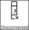 | Disconnected symbol appears when a device is disconnected. |
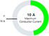 | Donut chart appears by default to all the devices except for ASFC, when the devices are connected and don’t have any alarm. |
Commands: The commands section contains buttons that can be used to change device settings during runtime. The commands can only be transferred if password protection is switched off on the device. Below are the available commands:
On: Allows you to keep breaker ON.
OFF: Allows you to keep breaker OFF.
Reset trip counter: Allows you to reset trip counter data.
Reset Minimum/Maximum: Allows you to reset minimum and maximum values.
Reset Min/Max Temperatures: Allows you to reset temperature values.
Delete Trip and Event Log: Clears the trip and event log data.
Reset Maintenance counter: Allows you to reset maintenance counter values.
Reset Counter and Statistical Information: Allows you reset counter and statistical information.
Reset All Min/Max Values Except Temperature: Allows you to reset the values of breaker parameter except temperature.
Reset Last Trip Message: Allow you to reset the last trip message.
Set/Reset DAS+: On click of Set/Reset DAS+ command, DAS+ state toggles (Active to inactive and vice versa).
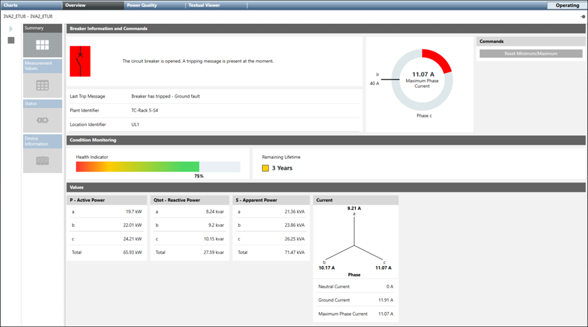
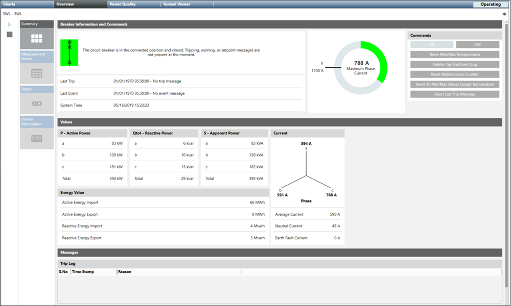
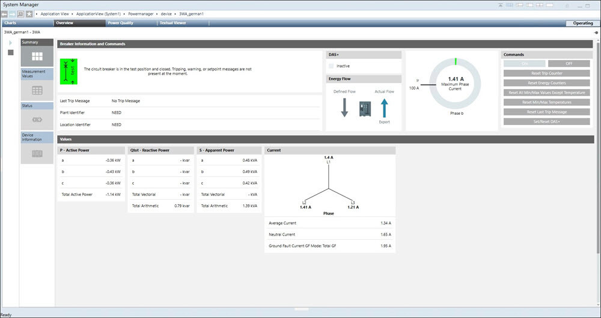
- Measurement Values: When selected, this tile displays the preconfigured measurement points of the selected device with description, current measured value, and defined unit.
- Status: Allows you to view trips, warnings, maintenance and statistical details of the selected breaker.
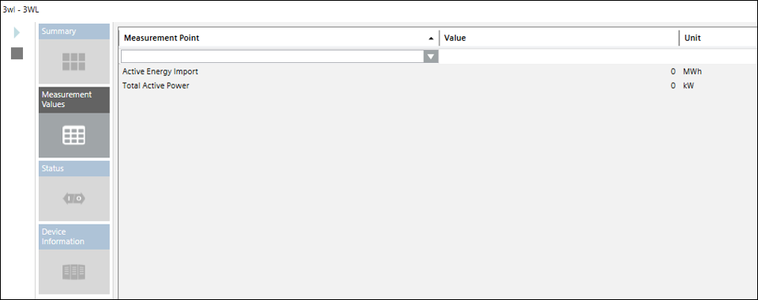
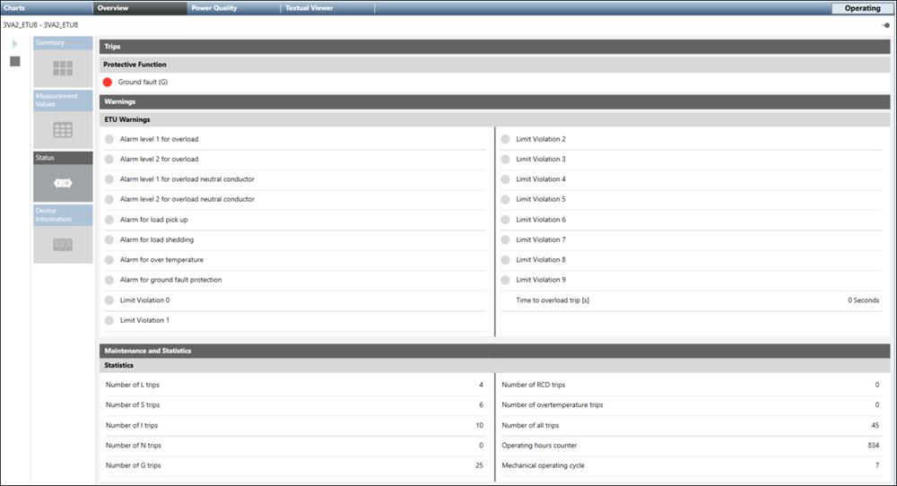
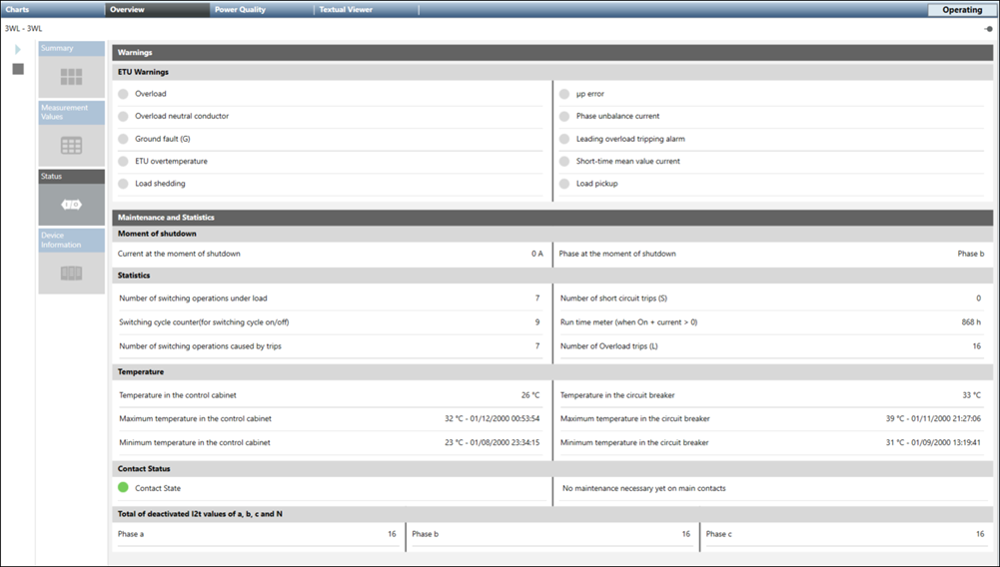
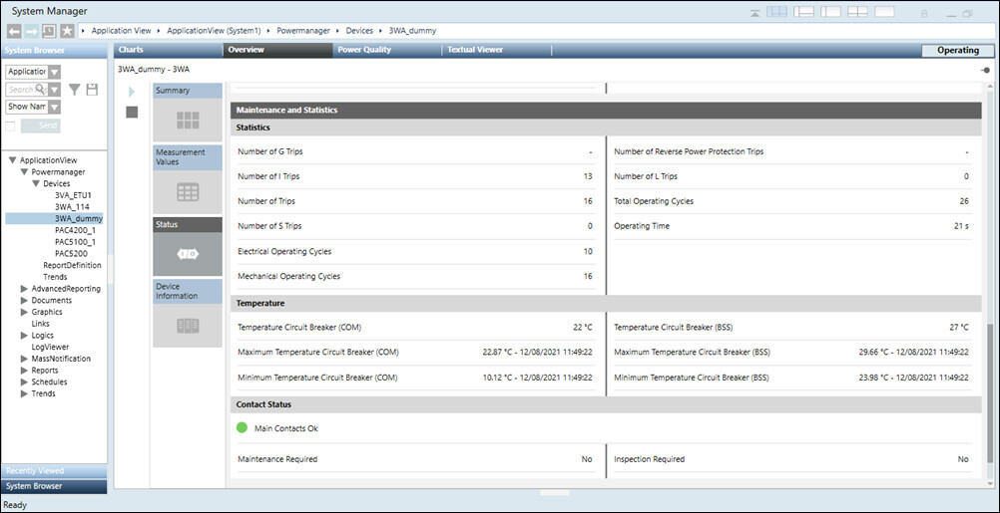
Device Information: Displays the following information:
Basic Information: This includes device name, type, description
Device Information: This includes manufacturer ID, hardware/software version, author, comments, COM module, firmware version of the COM module, order number, serial number, location and plant identifier, installation date and order number of the trip unit. License Information of 3WA breaker can be seen on overview.
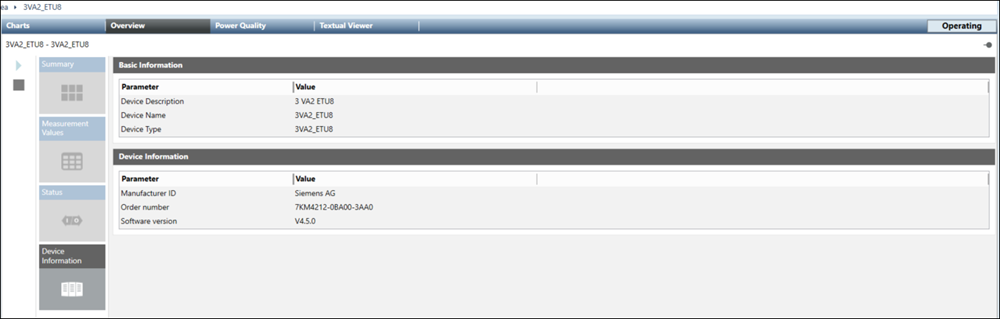
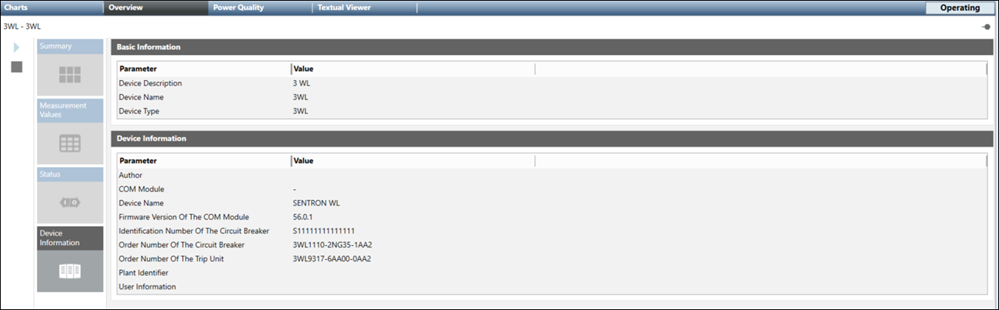